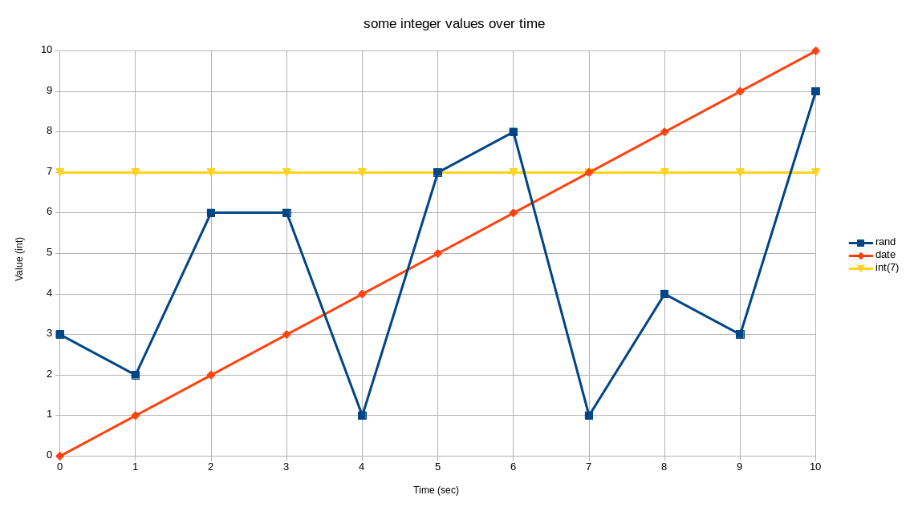
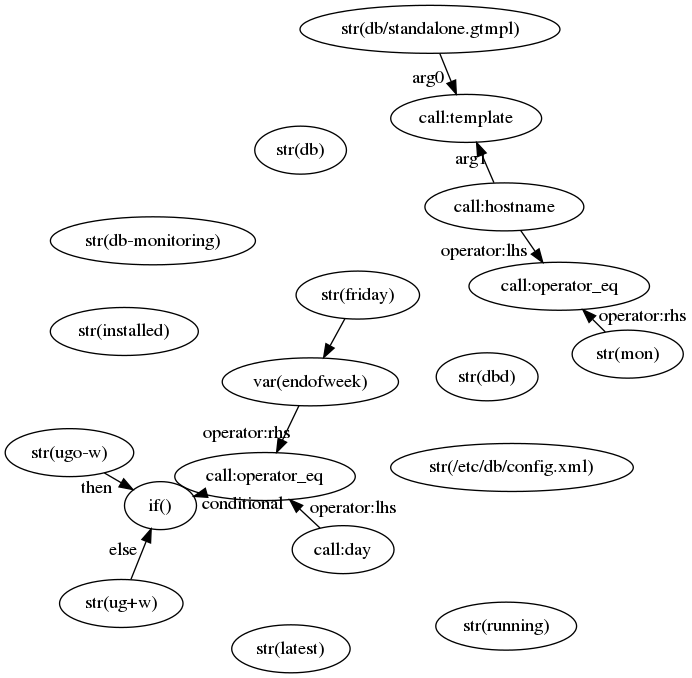
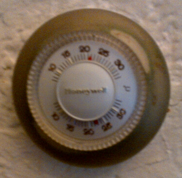

Mgmt has given us a lot of great features, demos, and insight into how infrastructure automation should be managed. Unfortunately it wasn’t a complete tool yet, because it was missing a crucial piece for its completeness. That all changes today with the addition of: the language.
An ideal language allows us to express easily what is useful for the programming task, and at the same time makes it difficult to write what leads to incomprehensible or incorrect programs.
– Nico Habermann
Much of the status-quo in configuration management and infrastructure automation relies on the flawed assumption that infrastructure is static. This was a reasonable first approximation for the past generation of tools to use to model our infrastructure, but is one that does not hold or satisfy us anymore.
Many variables in our infrastructure change over time: the load, a failure count and even the time of day might affect what our infrastructure should be doing. Our desired state also changes over time: we add and remove servers and services, software updates need applying, and even passwords need (should be) changing routinely.
The goal of the mgmt language is to be able to model your time varying infrastructure in a way which is safe, powerful, and easy to reason about. With that in mind, we’ve built a unique DSL which is declarative, functional and reactive. Let’s examine what all this means in more detail…
The language is actually quite small, and only has a small number of statements and expressions. The main ones are:
bind: bind’s an expression to a variable within that scope
$x = 42if: produces up to one branch of statements based on a conditional expression
if <conditional> {
<statements>
} else {
# the else branch is optional for if statements
<statements>
}
resource: produces a resource
file "/tmp/hello" {
content => "world",
mode => "o=rwx",
}
edge: produces an edge
file["/tmp/hello"] -> print["alert 4"]
All statements produce output. Output consists of between zero and more
edges and resources. A resource statement can produce a resource, whereas an
if statement produces whatever the chosen branch produces. Ultimately the goal
of executing our programs is to produce a list of resources, which along with
the produced edges, is built into a resource graph. This graph is then passed
to the engine for desired state application.
$foodatetime() or: magic(42, "answer")$x = if <conditional> { <expr> } else { <expr> }42, or [63.2, -48.5, 16.1]Expression’s can be of any type in our language. Their values are used to
populate resource fields, if statement and expression conditionals, and
other value consuming nodes. The available types are:
true or false"string!"42 or -133.1415926[6, 7, 8, 9,]{"boiling" => 100, "freezing" => 0, "room" => "25", "house" => 22, "canada" => -30,}struct{answer => "42", james => "awesome", is_mgmt_awesome => true,}func(s str) int or: func(bool, []str, {str: float}) struct{foo str; bar int}Here is a short example program:
$endofweek = "friday" # variable binding perhaps set according to your locale
pkg "db" {
state => "installed",
}
if hostname() == "mon" {
pkg "db-monitoring" {
state => "latest",
}
}
file "/etc/db/config.xml" {
# read-only "fridays" :)
mode => if day() == $endofweek { "ugo-w" } else { "ug+w" },
content => template("db/standalone.gtmpl", hostname()),
}
svc "dbd" {
state => "running",
}
If you look closely, you’ll notice that there is both an if expression, and an
if statement. This is a bit of a silly example, but try and think about what
it might do. Users of existing tools will probably find this familiar. More on
this later…
One goal of the language is to prevent you from accidentally destroying a data-centre when you make a mistake in configuration. If the language can help you, then your weekends will be happier, and your infrastructure can have more 9’s. The above Habermann quote has been stuck to my wall for quite some time now. Hopefully you’ll like my language and put up some mgmt art on your wall.
Some of the ways we help enforce safety are due to the fact that we are:
$x = "hello"
$x = "nope, nope" # the duplicate use of $x would be a compile error
$x = "hello"
if true {
$x = "i am shadowed" # this is allowed, but not a good practice to intentionally shadow
file "/tmp/bar" {
content => $x, # contents are: i am shadowed
}
}
file "/tmp/foo" {
content => $x, # contents are: hello
}
if "true" { # compile error, condition contains a string!
# whatever
}
So far I’ve described a small and mostly underwhelming language. You might think that it would constrain you heavily, and that it would be difficult to do anything powerful. There is nothing further than the truth. One of the most interesting parts of the language are its functions, which are reactive! Let’s look at what that means…
All variables and functions have a time “axis” component. This is exactly how we
perceive our world to work as well. The date and time isn’t a fixed value when
you call a datetime function, but rather it is a continuous stream of values.
A load function would represent a stream of the system load changing over
time. Even an integer constant can be represented as a stream: one which has a
constant (unchanging) value over time. Lastly, a random function which returns
a new value every second is yet another possibility. The three of these that
return integers are represented in the following graph:
|  |
| A graph depicting three different integer values in an mgmt program over time. A constant integer, the time/date in seconds relative to some initial time zero, and a random integer in the range [0,10] are all depicted. |
Each function gets to decide how often it outputs new values, if at all. All functions must output at least one value. Lastly, statements and expressions that depend on such an expression, automatically update and re-run as needed. This means that functions, variables, resources and everything else are all updated in real-time when necessary!
You will remember that the ultimate output of the program is a graph data-structure. In fact, the engine accepts a stream of graph data-structures and has a very efficient algorithm for switching from one to the next, to the next. Some programs might only output one single graph ever. Others might happen to regularly send a new graph every second or every hour. While others might generate new graphs with an irregular stochastic interval.
This is not a new paradigm invented by mgmt. This is actually a variant of a reasonably well studied paradigm called functional reactive programming. For mgmt, we’ve actually implementing a domain specific version of an FRP that has some unique and novel properties.
Hopefully you will learn to love this paradigm as I have, and it will let you model and build very powerful programs. Let’s look at some examples:
# this program outputs a single resource
# it will only ever stream a new graph to the engine if the source code changes
# after the graph is sent to the engine, the engine will create a single file on disk
$x = 42
file "/tmp/answer" {
content => printf("the answer to life, the universe, and everything is: %d", $x),
}
# this program outputs a new graph every second, since the datetime() function
# runs with a 1 second precision, in fact, if you watch the contents of this
# text file that is created, you'll note that it changes every second as well!
$x = datetime()
file "/tmp/seconds-since-1970" {
content => printf("there have been %d seconds since 1970", $x),
}
# this program outputs a new graph every five seconds, since most kernels happen
# to recalculate the 1 minute load average every five seconds!
$x = load()
file "/tmp/current-load-average" {
content => if $x > 2.0 {
"the load is very high!"
} else {
printf("the current system load average is: %d", $x)
},
}
Having a language which is easy to reason about is always going to be important. No language or test suite can ever prevent all bugs, so it’s important that the human can easily understand and predict what is expected to happen. In particular, it can get increasingly difficult to do so when reasoning about distributed systems. As a result, the languages size, simplicity and primitives should hopefully help make this as straightforward as possible. We’ll discuss some of these primitives below.
We invision that one day it should be possible to write some formal analysis tools that could provide some insights into the behaviour of a distributed cluster of mgmt agents running your program.
Let’s now consider the logical structure of a program. As we know, we need to model reactive dataflows. These are used to ultimately build some resources. The way we do this is by representing everything which is reactive (expressions) by vertices in a graph data structure, and with the edges representing the flows.
An edge which loops back onto itself wouldn’t be very logical because it would imply that a data flow was circular. As a result, we find that our structure needs to be a directed acyclic graph. We’ll call this the function graph. (This is coincidentally the same kind of data structure used by our resource graph!)
During compilation, the program is transformed into such a graph, which is then
passed to the function graph engine for execution. Every time we populate all of
the vertices which have outdegree == 0, we know that we can use that set of
values to populate all the resources and other statements.
Let’s look at a short sample program and its corresponding graph. Remember the earlier “read-only fridays” example from earlier? Here it is again:
$endofweek = "friday"
pkg "db" {
state => "installed",
}
if hostname() == "mon" {
pkg "db-monitoring" {
state => "latest",
}
}
file "/etc/db/config.xml" {
# read-only "fridays" :)
mode => if day() == $endofweek { "ugo-w" } else { "ug+w" },
content => template("db/standalone.gtmpl", hostname()),
}
svc "dbd" {
state => "running",
}
If you’re adventurous, try and imagine what the corresponding function graph might look like. You should probably have come up with something like this:
|  |
| The function graph representation of a simple program. |
You’ll probably notice a few interesting characteristics about the graph:
Many vertices (in particular those of the form: str(foo) are not connected.
This is because they don’t need to send their values to any expressions, and are only consumed by statements.
The if expression is present in the graph, but not the if statement.
Remember, the reactive nature is only required for expressions. When all the necessary expressions have values, then they are used to populate the statements and ultimately generate a resource graph. This happens as often as is necessary, which occurs when at least one of the expressions would cause a change to a statement that would result in a different output resource graph.
The if expression receives values from the conditional and the two branches.
All three of these expressions can affect the output of the if
expression.
The function (call) args are incoming edges, and the result is an outgoing edge.
Since a graph data structure needs to know which arg is the zeroth, 1st, and so on, all the edges are named accordingly, so that functions can decide which values to use and in which order.
Every expression is also a function!
As a result of all of our expressions being reactive, each one also has
a corresponding function which performs the necessary data computation.
In most cases this computation is quite simple and might only involve
returning a static value (in the case of a constant like int) or might
involve returning one of two arguments based on the value of a third if
it was the function corresponding to the if expression.
If you’d like to learn more about how these graphs are built, you can examine
the Graph method of the Expr interface.
You’ve now learned that all expressions represent a sequence of values on a time
domain “axis”. Wouldn’t it be interesting if we could query a historical value?
It turns out that we can. While the variable $x represents its current value,
the variable $x{1} represents the last value it had, $x{2} represents the
value before that, and so on… The zeroth index ($x{0}) was not forgotten, it
actually represents the current value.
Here’s a short example that demonstrates the past dates and times:
# in a terminal run: watch -n 0.1 'cat /tmp/mgmt/history'
# to see what happens to the file in real-time
$dt = datetime()
$hystvalues = {"ix0" => $dt, "ix1" => $dt{1}, "ix2" => $dt{2}, "ix3" => $dt{3},}
file "/tmp/mgmt/history" {
# please excuse the long line, in practice you might want
# to use an external template so that this is more readable
content => template("Index(0) {{.ix0}}: {{ datetimeprint .ix0 }}\nIndex(1) {{.ix1}}: {{ datetimeprint .ix1 }}\nIndex(2) {{.ix2}}: {{ datetimeprint .ix2 }}\nIndex(3) {{.ix3}}: {{ datetimeprint .ix3 }}\n", $hystvalues),
}
One limitation of the current historical value lookup, is that all requested values must exist before a resource graph can be generated. In other words, the programs work most efficiently when the lookup index is a static (preferably small) constant. These semantics might change in the future as our function engine matures.
If you don’t know what hysteresis is, don’t worry. It’s a word that describes something you already understand… Put plainly, hysteresis is a property that stores a “state history” so that its current actions can depend on both the current value and previous values.
For example, suppose you have a heated home in Canada. The average outdoor temperature in Canada is about -20°C. You wish to heat your house to +22°C. Let’s suppose that the outdoor cooling is perfectly thermodynamically efficient, and so is your indoor heater. The indoor temperature would then drop below +22°C, and the heater would turn on. It would then near instantly bring the heat back up above +22°C and then switch off. It would get cold again, and the cycle would continue. In a perfectly thermodynamically efficient scenario, the cycle would oscillate infinitely fast, which would probably either break your heater or make an incessant “clicking noise”.
|  |
| A thermostat exhibits hysteresis, some of which make a clicking noise when turning on or off. The top semi-circle of numbers denote the user requested set-point, while the bottom semi-circle denote the current temperature. Please excuse the blurry photograph. |
To avoid this problem we have hysteresis. Once we are heated to +22°C, we turn off and remain off until we drop down below +20°C. After we’re below that threshold, we can turn on again until we reach +22°C. You’ll note that at +21°C, if we didn’t know whether we we’re heating or cooling, we wouldn’t be able to determine whether we should be turning the heating on or off. That’s possible with hysteresis since it knows the historical values we travelled through.
Since we have a time domain for every variable, it is very easy to use this information to implement hysteresis. Instead of responding to the current temperature to control temperature, you might instead choose to respond to client load, and start up available processing hosts to handle that load.
In the below example, if we go over a load threshold, we redistribute some of
the load elsewhere so that each customer has a well performing virtual host. We
can do this dynamically because of our reactive language and the power that
comes when we integrate it with powerful resources such as virt.
$theload = load()
$threshold = 1.5 # change me if you like
# simple hysteresis implementation
$h1 = $theload > $threshold
$h2 = $theload{1} > $threshold
$h3 = $theload{2} > $threshold
$unload = $h1 || $h2 || $h3
virt "mgmt1" {
uri => "qemu:///session",
cpus => 1,
memory => 524288,
state => "running",
transient => true,
}
# this vm shuts down under load...
virt "mgmt2" {
uri => "qemu:///session",
cpus => 1,
memory => 524288,
state => if $unload { "shutoff" } else { "running" },
transient => true,
}
There are many more example programs which you might like to consider. Some of them are abstract and contrived as they are intended to demonstrate some of the language features and properties. The more interesting programs will emerge as more users apply this tool and design philosophy to their difficult problems.
Have a look in our examples folder, and please feel free to submit your own!
It turns out that the language has a number of interesting properties. I’d like to point out a few…
The lang/engine separation means that runtime-errors are virtually as safe as compile-time errors!
There is a separation between the (frontend) language and the (backend) engine. As a result, while we aim to eliminate run-time errors entirely, they are relatively safe if they do occur, because it would just mean that a new resource graph was not pushed to the engine.
Code is actually a graph, so ordering is actually resolved cleverly.
You would be insane to write out-of-order code, but since the language actually represents a graph, the following code is actually valid:
file "/tmp/hello" {
content => $x, # this is in scope, and valid!
}
$x = $y
$y = "world"
Please don’t write it this way. If we need to, we can add a restriction to only allow in-order code.
Variables are immutable, which helps create safer programs.
This is actually a great restriction that goes hand-in-hand with functional programming. It’s actually the binding which is immutable, as each bound variable will have an ever changing stream of values associated with it. You can still “switch” that binding between to other expressions by having an if expression be bound to the variable first.
Hysteresis will help us model real-life decision making and complex, distributed systems.
Different types of hysteresis in the context of mgmt is possible. Of
note, I’ve thought of sequence-based and time-based hysteresis. We’ve
implemented the $x{3} syntax to express that we want the third
historical value in the time series sequence of this variable, however
an alternate variant that returns the value N seconds ago could be
implemented.
Reactive variables can help us model local real time systems, but can also handle events in the distributed system.
Events from the output of functions that interact with the rest of the distributed system can provide some interesting information. They will be able to help eliminate patterns that previously required using and glueing more than one tool together. Those combinations also made it difficult to reason about how they actually interact together. In particular, passing data and enforcing type safety was nearly impossible!
We’ll also probably be able to handle a built-in $error event stream,
which we generate from the engine, although we’ll be looking into that
feedback scenario at a later date.
There is already a large body of work and knowledge surrounding functional reactive programming. I am certainly no expert in FRP, and I’ve got lots more to learn, but one thing FRP experts might notice is that some of the concepts from FRP are named differently from what they might expect, or are suspiciously absent.
In mgmt, we don’t talk about behaviours, events, or signals in the strict FRP definitons of the words. Firstly, because we only support discretized, streams of values with no plan to add continuous semantics. Secondly, because we prefer to use terms which are more natural and relatable to what our target audience is expecting. Our users are more likely to have a background in Physiology, or systems administration than a background in FRP. Having said that, we hope that the FRP community will engage with us and help improve the parts that we got wrong. Even if that means adding continuous behaviours!
Of note, I’m particularly proud of how we’ve designed and built the mgmt language, in particular because I think it has the possibility of bringing FRP closer to the mainstream. Up until now, there haven’t been many use cases for FRP outside of UI interfaces. I was quite pleased when I realized that this would be a good fit. Functional programming enthusiasts can imagine this as a way to “get those kids to eat their veggies”, in that historically it has been very hard to get people to replace less safe imperative programming with functional paradigms.
Actually, yes. There is a language guide. It would surely be improved with your patches. Please contribute.
Mgmt and the language aren’t finished. There’s still lots to do, but there’s
now so much you can use today. With this initial release of the language, I
think we’ve finally hit the “I can use this to get real work done” stage with
the caveat that you might occasionally have to write a small patch for a new
function that you need, or a test case if you find a bug. We’re still targeting
this to folks who want to get involved in the project, but the time till general
availability and a 0.1 release is rapidly closing!
Here are a few things that are currently missing or need improvement:
ExprFunc values and user defined functions (in the DSL) need more thought..mcl as a file extension.
Yes, we all know I suck at naming. Sorry about that. :/emacs, gedit and vim. Patches would be welcome!Please see all of the issues tagged as #mgmtlove if you’d like to get involved. We can tag more as needed.
Red Hat has been my main source of funding for this work up until now, and I’m grateful for that, but I’m sad to say that they’ve officially set my time quota to zero. I’m going to try and continue the work, but it’s more difficult without being able to work on it full-time, or without funding.
| Mgmt needs a home. |
If you, your organization, or someone you know would like to help fund my mgmt work either via a development grant, donation, contract, or offer of employment, or, if you’d like to be a contributor to the project, please let me know! Without your support, mgmt will die.
I might write a blog post on language internals if there’s interest. I should also write a post on the “deploys” feature when it’s a bit more polished. I’ll be hacking on mgmt, will you?
I owe a huge debt to my friend Sam who so
patiently answered all of my FRP questions, and guided me through all of the
language/compiler design problems that I was facing. If you see both of us at a
conference, buy him the $beverage.
Happy Hacking,
James
You can hire James and his team at m9rx corporation.
You can follow James on Mastodon for more frequent updates and other random thoughts.
You can follow James on Twitter for more frequent updates and other random thoughts.
You can support James on GitHub if you'd like to help sustain this kind of content.
You can support James on Patreon if you'd like to help sustain this kind of content.
Your comment has been submitted and will be published if it gets approved.
Click here to see the patch you generated.
{kind=link}
{kind=link}
{kind=link}
{kind=link}
Comments
Nothing yet.
Post a comment